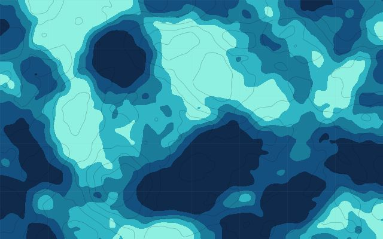
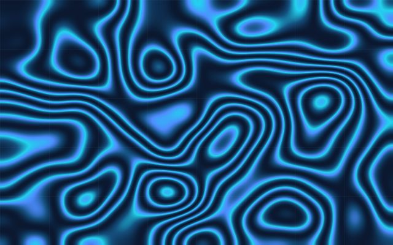
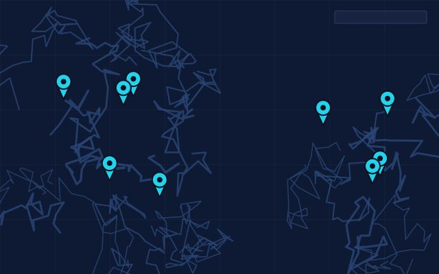
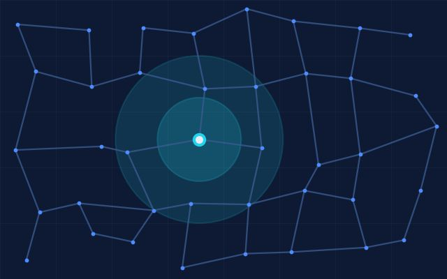
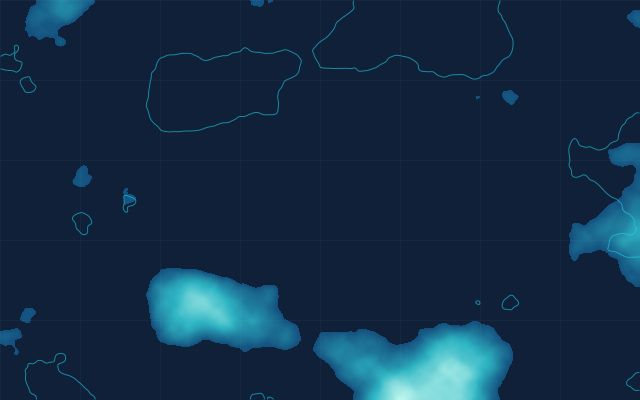
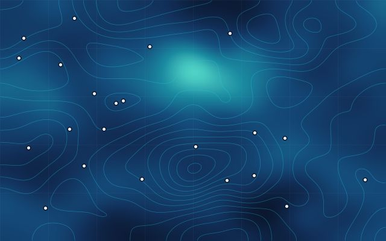

GIS
Managing, editing and analysing geographic data in layers, with attention to coordinate reference systems.
GIS · Remote Sensing · WebGIS
GIS AnalystGeo-InformaticsRemote SensingSpatial AnalysisWebGIS
BS Geo-Informatics, 7th Semester · PMAS-Arid Agriculture University Rawalpindi
I am a Geo-Informatics student who works with spatial data, satellite imagery and web maps. This portfolio collects my academic GIS and remote sensing work and shows the skills behind it.
Focus
Skills
The main areas I study and practise. The Skills page lists the tools I have used and the projects they appear in.
Managing, editing and analysing geographic data in layers, with attention to coordinate reference systems.
Working with satellite imagery to describe and monitor land-surface conditions.
Asking questions of spatial data: proximity, overlap, patterns and change.
Designing clear, readable maps that communicate their message.
Publishing and presenting geographic data through web-based maps.
Automating and extending spatial workflows with code.
Selected work
A selection from my GIS, remote sensing, WebGIS and programming projects. Open any card for details.

Mar 2026 – May 2026
A Multi-Criteria Decision Analysis workflow combining terrain and spatial criteria to map groundwater-potential zones for an arid region of Balochistan.

Nov 2025 – Jan 2026
A subsidence-focused remote-sensing project for Lahore using Sentinel-1 data.

Dec 2025 – Jan 2026
An interactive web map concept for viewing health-facility locations in Islamabad and Rawalpindi, built with Leaflet.js.

May 2025 – Jun 2025
An analysis of road-network access to emergency healthcare locations in Rawalpindi.

Feb 2026 – Mar 2026
NDVI and NDBI calculated from satellite bands to compare vegetation and built-up patterns across Chakwal and Jhelum districts.

Mar 2026 – Apr 2026
A spatial decision-support workflow examining climate-related spatial patterns on the Potohar Plateau using interpolation and raster analysis.
Education
PMAS-Arid Agriculture University Rawalpindi
Department: IGEO